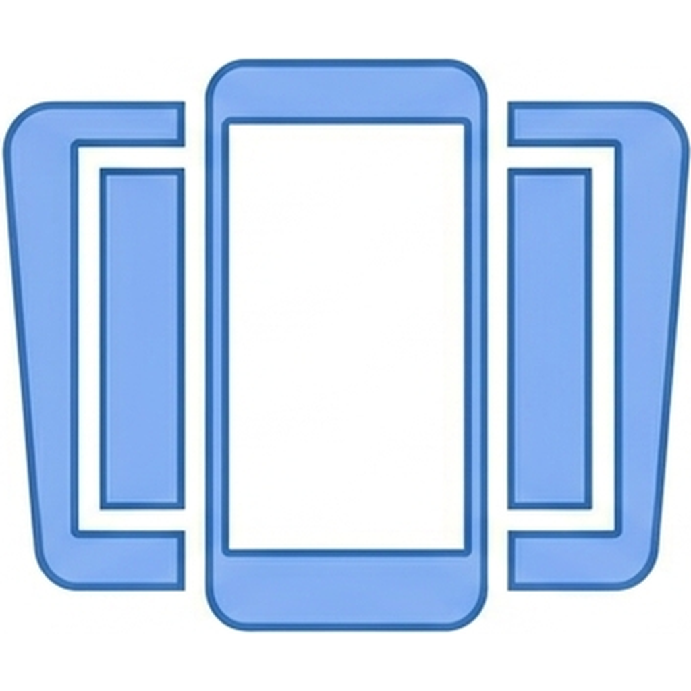
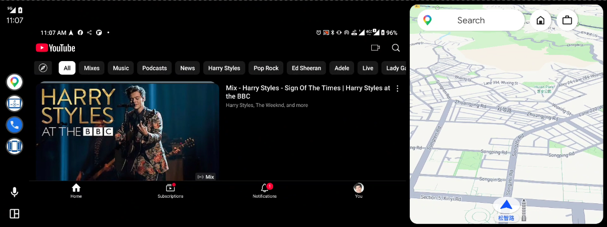
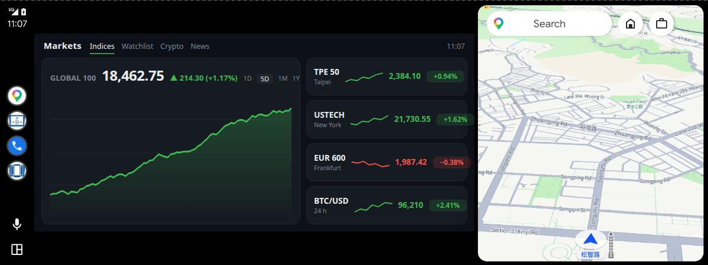
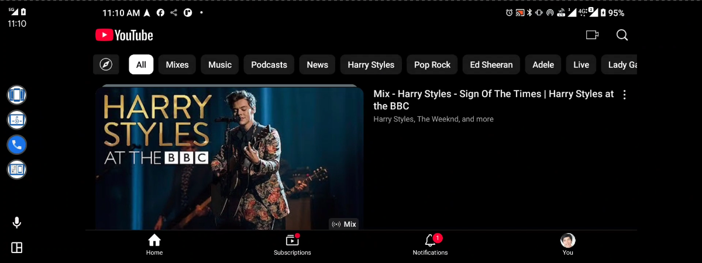
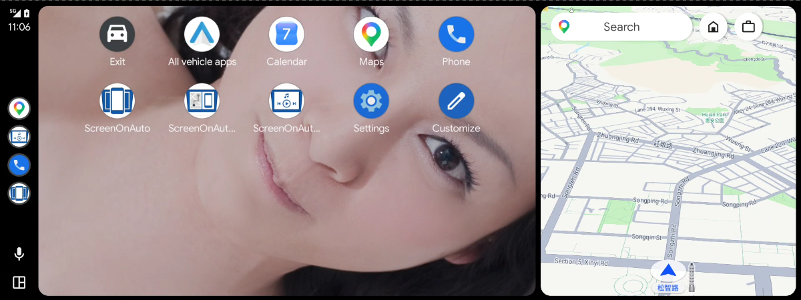
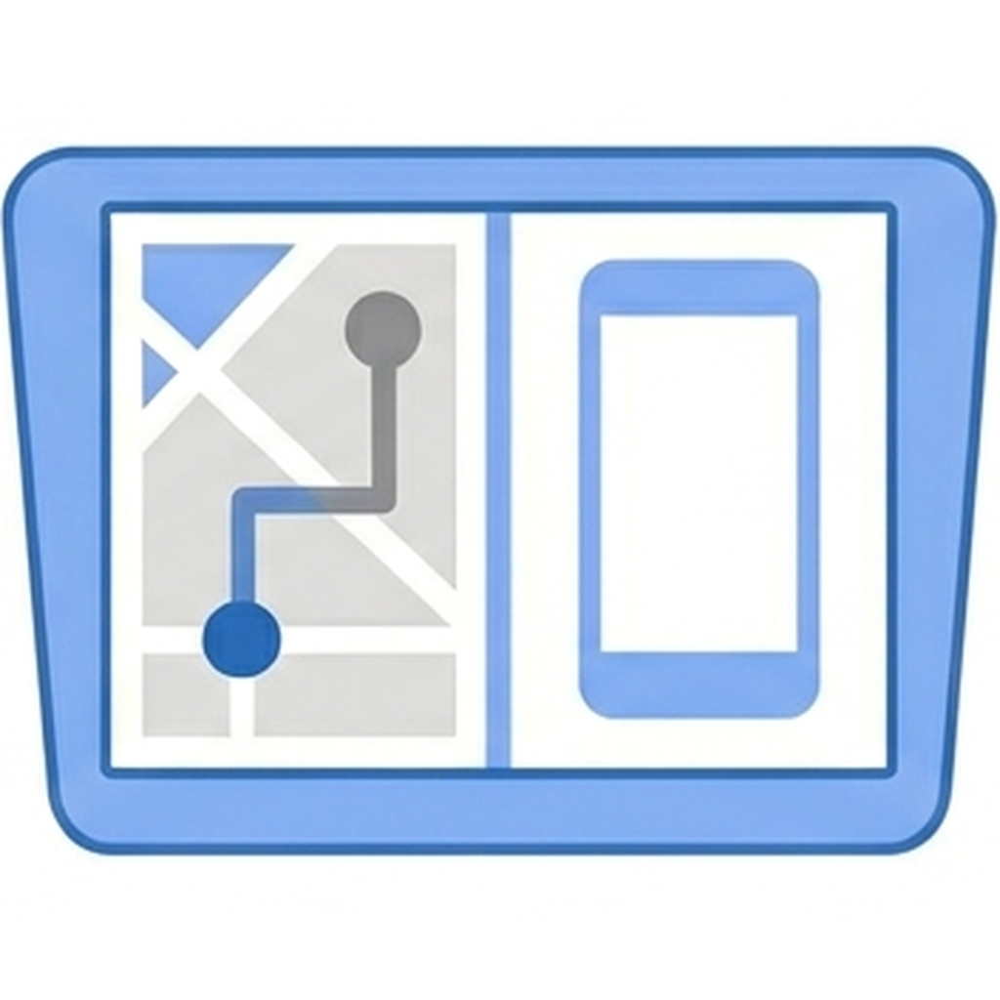
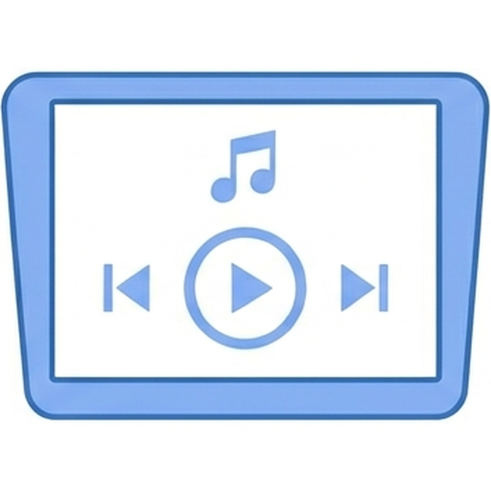

Esegui il mirroring dello schermo del tuo telefono Android sul display Android Auto, con supporto per i comandi multimediali.
Gratuita — nessuna funzionalità richiede pagamenti aggiuntivi.
English · 繁體中文 · Português (Brasil) · Español · Deutsch · Français · GitHub




Il metodo di installazione dipende dalla versione di Android:
Android 14 e successivi — installazione solo tramite Google Play (su invito; l'app non è ricercabile sul Play Store). Unisciti alla lista dei tester →
Android 13 e precedenti — installa l'APK con KingInstaller (passaggi qui sotto), oppure tramite Google Play.
Cattura e duplica lo schermo del telefono sull'unità Android Auto in tempo reale.
Controlla qualsiasi app multimediale del telefono dall'interfaccia multimediale nativa di Android Auto.
Tocca e scorri il display Android Auto per controllare il telefono.
Avvia il mirroring automaticamente alla connessione di Android Auto.
Apre automaticamente un'app scelta sul telefono all'avvio del mirroring.
Forza il telefono in orizzontale durante il mirroring, con un pulsante sullo schermo.
Riduce automaticamente la luminosità del telefono durante il mirroring inattivo (ritardo di 15–120 s).
Tiene attivo lo schermo del telefono durante il mirroring; interruzione automatica alla disconnessione.
Aggiungi fino a 4 pulsanti di avvio rapido delle app sulla schermata di mirroring di Android Auto.
Mostra o nascondi i pulsanti singolarmente: Forza orizzontale, Oscura, e Indietro / Home / App recenti.
Nel mirroring Legacy, allinea i pulsanti a sinistra o evita automaticamente la barra di navigazione del telefono.
Ritaglia larghezza/altezza dell'immagine per le unità che tagliano i bordi.
Android Auto esegue solo le app installate dal Play Store, e Android 14+ blocca il workaround KingInstaller — quindi Play è l'unico modo per ottenere una build accettata da Android Auto. È comunque l'app completa, distribuita tramite il canale di test interno di Play.
L'installazione avviene su invito (l'app non è ricercabile sul Play Store). Consulta Partecipare al beta test per il modulo di iscrizione e le istruzioni passo passo.
Android Auto richiede app installate tramite Google Play. Un APK installato direttamente viene rifiutato; KingInstaller installa gli APK dichiarando Google Play Store come origine dell'installazione.
KingInstaller.apk dalla sua pagina delle release, consenti «Installa app sconosciute» per il tuo browser o file manager, poi installalo.ScreenOnAuto-*.apk dalla release più recente, apri KingInstaller, scegli l'APK e tocca Installa.Funziona con qualsiasi metodo di installazione — sideload o Google Play. Sul telefono, apri Impostazioni → Dispositivi connessi → Android Auto → Personalizza avvio applicazioni; dovresti vedere tre voci ScreenOnAuto:
| Nome | Funzione | |
|---|---|---|
| ScreenOnAuto | Mirroring dello schermo a schermo intero — sostituisce l'area della mappa. | |
 | ScreenOnAuto (Legacy) | Mirroring tramite il percorso di proiezione Legacy — può essere affiancato alla mappa. |
 | ScreenOnAuto Media Controller | Controlla qualsiasi app multimediale del telefono dall'interfaccia multimediale nativa di Android Auto. |
Pronto? Consulta Come si usa per avviare il mirroring in auto.
| Autorizzazione | Necessaria per |
|---|---|
| Cattura schermo (MediaProjection) | Mirroring schermo |
| Accesso alle notifiche | Proxy sessione multimediale |
| Mostra sopra le altre app | Oscuramento automatico e Forzatura orizzontale |
| Servizio di accessibilità | Inoltro tocco (sperimentale) e pulsanti Indietro / Home / App recenti |
Suggerimento: per saltare la finestra di cattura schermo a ogni avvio, pre-concedi l'autorizzazione via ADB — vedi Concedere il permesso di mirroring via ADB.